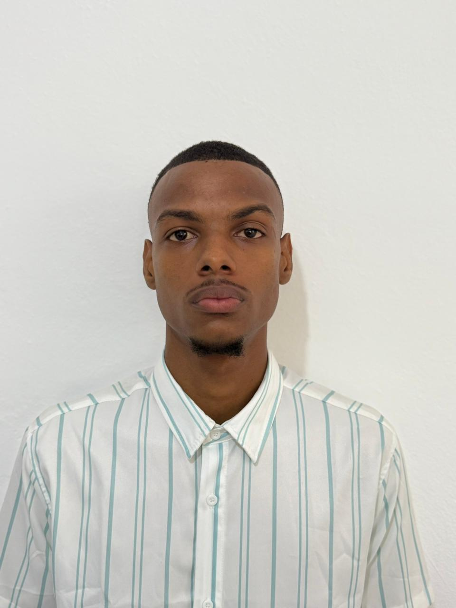

Matrícula: 100657105
Carrera: Licenciatura en Informática
Email: enmanuelg725@gmail.com

Tengo a mi padre vivo y un hermano, pero vivo con mi mamá y mis 2 hermanas. Mi entorno es un lugar donde se puede sentir el calor dominicano, pero del mismo modo se puede vivir muy tranquilo. Las personas tienen un nivel de educación bastante aceptable y no hay pobreza extrema en mi comunidad.
De niño estudié en la escuela básica Las Canelas, a pocos minutos de mi casa. Luego asistí al Politécnico Madre Rafaela Ybarra, a unos 30 minutos caminando. Actualmente curso la Licenciatura en Informática en la Universidad Autónoma de Santo Domingo (UASD), en Ciudad Universitaria. Al terminar la secundaria apliqué a una beca para estudiar odontología en la Universidad Odontológica de Santo Domingo.
Realicé una pasantía en la asignatura Administración de Centros de Cómputos, bajo la supervisión de la ingeniera Hayser Beltre. Fue mi primera experiencia profesional vinculada directamente a mi carrera.
He liderado varios proyectos académicos, destacando una aplicación de pagos tipo tienda online que desarrollé como trabajo final en la asignatura Programación 1, junto al maestro Víctor Núñez.
A lo largo de mi vida he recibido múltiples medallas y diplomas. En la universidad, mis logros se reflejan en mis calificaciones, donde suelo obtener A+ en mis asignaturas.
Fui encargado de un grupo de jóvenes de mi comunidad, colaborando con la asociación del municipio ubicada en la Iglesia Católica Nuestra Señora de Guadalupe (sector Los Coquitos). Esta asociación, conocida a nivel nacional, ofrece cursos respaldados por Infotep, como Informática Básica y Avanzada, dentro del programa Oportunidad 14-24.
| Hora | Lunes | Martes | Miércoles | Jueves | Viernes | Sábado | Domingo |
|---|---|---|---|---|---|---|---|
| 7:00–8:50 AM |
INF 5170-01 19386 Class 7:00 AM–8:50 AM LIF 103 |
INF 5160-05 45979 Class 8:00 AM–11:50 AM LIF 103 |
|||||
| 10:00–11:50 AM |
IDI 0130-08 19366 Class 10:00 AM–11:50 AM NOD 201 |
||||||
| 2:00–3:50 PM |
INF 5200-Z02 19481 Class 2:00 PM–3:50 PM LIF 102 |
||||||
| 6:00–7:50 PM |
INF 3290-05 19480 Class 6:00 PM–7:50 PM LIF 107 |
||||||
| 7:00–9:50 PM |
INF 3290-05 19480 Class 7:00 PM–9:50 PM LIF 107 |
INF 5290-Z01 24303 Class 7:00 PM–9:50 PM LIF 108 |
IDI 0130-08 19366 Class 8:00 PM–9:50 PM NOD 204 |